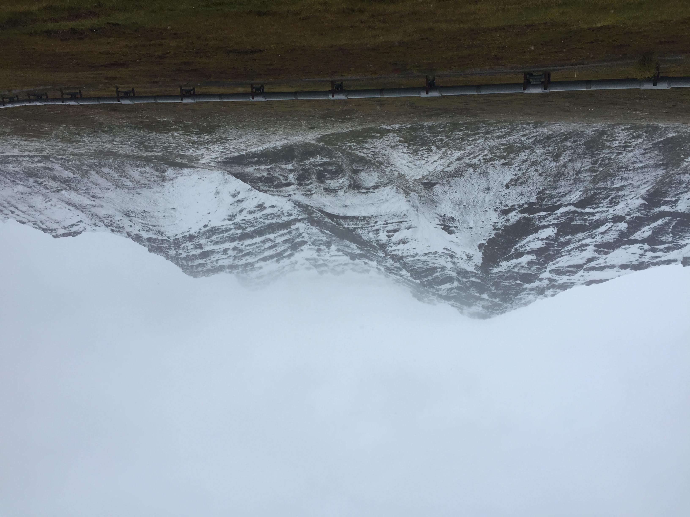

About Me
Hi, my name’s Rui and I’m a PhD Candidate at Frankenberg Lab, Caltech. My research interest is evaluating vegetation-climate feedbacks, such as carbon, water, and energy fluxes between land and atmosphere, using a fusion of remote sensing techniques, specifically in regions with limited direct measurements, including the Arctic and mountainous regions.
I am most skilled in: Solar-Induced chlorophyll Fluorescence (SIF), canopy reflectance, and vegetation phenology
Education
California Institute of Technology
Ph.D. 2017 - present, M.S. 2018
Major: Environmental Science and Engineering
Minor: Electrical Engineering
Thesis Advisory Committee: Christian Frankenberg (Advisor), Tapio Schneider (Chair), Paul O. Wennberg, Anthony Bloom
Thesis: Remotely evaluating the seasonality of gross primary production at high latitudes
Ameriflux
2017 Summer
Flux Course
Lehigh University
M.S. 2015 - 2017
Major: Earth and Environmental Science
Advisor: Benjamin Felzer
Thesis: The associated effects of temperature and soil moisture on forest carbon fluxes in the contiguous US
Sun Yat-sen University
B.S. 2011 - 2015
Major: Atmospheric Science
Advisor: Song Yang
Thesis: Characteristics of hot days in China with Central-Pacific El Niño
Projects & Publications
Photosynthetic Phenology in an Evergreen Needleleaf Forest in Colorado
Multi-scale studies on the seasonality of SIF, hyperspectral reflectance, canopy color, and GPP in Niwot Ridge, Colorado. These papers feature a canopy-level telescope, PhotoSpec (a.k.a. BEYONCE).
-
Cheng, R., Magney, T.S., Dutta, D., Bowling, D.R., Logan, B.A., Burns, S.P., Blanken, P.D., Grossmann, K., Lopez, S., Richardson, A.D. and Stutz, J., 2020. Decomposing reflectance spectra to track gross primary production in a subalpine evergreen forest. Biogeosciences, 17(18), pp.4523-4544. https://doi.org/10.5194/bg-17-4523-2020
-
Magney, T.S., Bowling, D.R., Logan, B.A., Grossmann, K., Stutz, J., Blanken, P.D., Burns, S.P., Cheng, R., Garcia, M.A., Kӧhler, P. and Lopez, S., 2019. Mechanistic evidence for tracking the seasonality of photosynthesis with solar-induced fluorescence. Proceedings of the National Academy of Sciences, 116(24), pp.11640-11645. https://doi.org/10.1073/pnas.1900278116
-
Seyednasrollah, B., Bowling, D.R., Cheng, R., Logan, B.A., Magney, T.S., Frankenberg, C., Yang, J.C., Young, A.M., Hufkens, K., Arain, M.A. and Black, T.A., 2020. Seasonal variation in the canopy color of temperate evergreen conifer forests. New Phytologist. https://doi.org/10.1111/nph.17046
Remotely Estimating Photosynthetic Seasonality in the Arctic
in prep
Radiative Transfer in Mountainous Regions
Topographic dependence of radiation and vegetation dynamics.
- Cheng, R., Köhler, P., & Frankenberg, C. (under review), Impacts of Topography and Radiation on Temporal Upscaling of Instantaneous Solar-Induced Chlorophyll Fluorescence, Agricultural and Forest Meteorology.
Interannaul Variability of Precipitation in SoCal
ENSO and PDO explain 20% of the interannual variability of total precipitation and precipitation frequency in SoCal.
- Cheng, R., Novak, L., & Schneider, T., 2021. Predicting the interannual variability of California’s total annual precipitation. Geophysical Research Letters, 48, e2020GL091465. https://doi.org/10.1029/2020GL091465
Droughts and Floods in Ethnographic Reports
- Felzer, B.S., Ember, C.R., Cheng, R. and Jiang, M., 2020. The Relationships of Extreme Precipitation and Temperature Events with Ethnographic Reports of Droughts and Floods in Nonindustrial Societies. Weather, Climate, and Society, 12(1), pp.135-148. https://doi.org/10.1175/WCAS-D-19-0045.1
Indoor Navigation
- Zhang, D., Qiu, G., Gao, Y., Fang, X., Cheng, R., Chang, A. and Chan, C.Y., 2014, October. Crowdsourcing based radio map anomalous event detection system for calibration-on-demand. In 2014 International Conference on Indoor Positioning and Indoor Navigation (IPIN) (pp. 220-229). IEEE.
Teaching
2021 Spring
GE 157c: Remote Sensing for Environmental and Geological Applications
Prof. Bethany Elmann, Caltech
2019 Winter
ESE 103: Earth’s Biogeochemical Cycles
Prof. Christian Frankenberg, Caltech
2018 Winter
ESE 131a: Physical Oceanography I
Prof. Jörn Callies, Caltech
2018 Fall
ESE 101: Earth’s Atmosphere
Prof. Tapio Schneider, Caltech
2019 - present
Data and Coding Instructor at the Carpentries, Caltech
2016
Certificate of Participation in Teacher Development Program (I+II), Lehigh University
A Little More About Me
Alongside my research interests, my other interests and hobbies are:
- Science Outreach
- DEI advocacy on women in STEM
- Roadtrips
- Swimming
- Yoga
- Jogging
Look at this cool image I took along the Dalton Highway in Brooks Range, Alaska.
